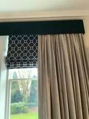
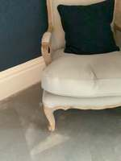
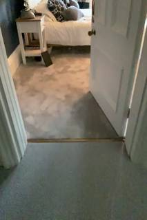
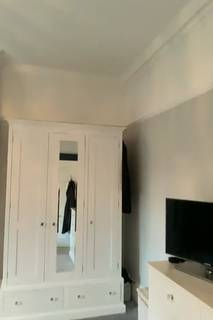
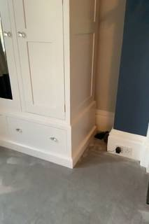
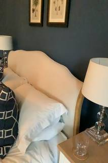

To determine which object is closest to the TV, we first identify the location of the TV and the other mentioned objects in the provided frames.
- Identify the TV: The TV is clearly visible in frames 8, 9, and 10. It is sitting on top of a white chest of drawers (dresser).
- Identify the other objects:
- Table: There are bedside tables located next to the bed (seen in frames 1, 2, 29, 30). Additionally, the chest of drawers (dresser) that the TV is sitting on can be considered a type of table.
- Fireplace: After reviewing all the frames, no fireplace is visible in the room. There is a radiator under the window (frames 3, 24), but no fireplace.
- Bed: The bed is the central piece of furniture in the room (seen in frames 1, 2, 24, 28, 29, 31, 32, 33, 34).
- Chair: There is a chair in the corner of the room (seen in frames 25, 26, 27, 28).
- Analyze spatial relationships:
- The TV is sitting directly on the chest of drawers (dresser). In spatial reasoning tasks, if an object is on top of another, the distance between them is the smallest (effectively zero). If the dresser is categorized as a "table," then the table is the closest object.
- The bed is a few feet away from the dresser.
- The bedside tables are further away than the bed itself, as they are positioned at the head of the bed.
- The chair is located in a corner, far from the dresser where the TV is placed.
Since the TV is sitting directly on the dresser (which fits the general category of a table), the table is the closest object to the TV.
A
import numpy as np # 1. Select frames for reconstruction # We want frames that cover the TV, fireplace, bed, chair, and table. # Key frames are roughly every 187 frames. recon_indices = [0, 187, 373, 560, 746, 933, 1120, 1307, 1494, 1681, 1868, 2055, 2242, 2429, 2616, 2803, 2990, 3177, 3364, 3551, 3738, 3925, 4112, 4299, 4486, 4673, 4860, 5047, 5234, 5421, 5608, 5784] recon_frames = [InputImages[i] for i in recon_indices if i < len(InputImages)] recon = tools.Reconstruct.Reconstruct(recon_frames) # 2. Segment objects # We need masks for: TV, bedside table, fireplace, bed, chair. # We'll use a frame where each is clearly visible. # TV: frame 560 # Fireplace: frame 2616 (approx key frame 15) # Bed: frame 0 # Chair: frame 4299 (approx key frame 24) # Table: frame 187 objects_to_track = { "tv": "television", "table": "bedside table", "fireplace": "fireplace", "bed": "bed", "chair": "armchair" } masks = {} for key, prompt in objects_to_track.items(): # Try to segment across the whole video to get the best possible mask # We'll use a window of frames for each to be efficient if key == "tv": seg = tools.SAM3.segment_video_by_text(["television"], labels=["tv"], prompt_frame_idx=0, start_frame=500, end_frame=700) elif key == "table": seg = tools.SAM3.segment_video_by_text(["bedside table"], labels=["table"], prompt_frame_idx=0, start_frame=100, end_frame=300) elif key == "fireplace": seg = tools.SAM3.segment_video_by_text(["fireplace"], labels=["fireplace"], prompt_frame_idx=0, start_frame=2500, end_frame=2800) elif key == "bed": seg = tools.SAM3.segment_video_by_text(["bed"], labels=["bed"], prompt_frame_idx=0, start_frame=0, end_frame=300) elif key == "chair": seg = tools.SAM3.segment_video_by_text(["armchair"], labels=["chair"], prompt_frame_idx=0, start_frame=4200, end_frame=4500) masks[key] = seg # 3. Compute distances # We need a common frame to measure distances. # Let's find a frame where as many as possible are visible, or just use centroids from their respective best frames. # Since the objects are stationary, their world coordinates should be consistent. def get_world_centroid(seg, recon): if seg.num_objects == 0: return None # Use the first frame where the object is found fi = seg.frame_indices[0] return seg.get_centroid_3d(recon, frame=fi, object=0) centroids = {} for key, seg in masks.items(): centroid = get_world_centroid(seg, recon) if centroid is not None: centroids[key] = centroid else: print(f"Warning: Could not find centroid for {key}") # Calculate distance from TV to others tv_centroid = centroids.get("tv") if tv_centroid is None: # Fallback: try to locate TV in frame 560 and get point # For now, let's hope the text prompt worked. print("Error: TV centroid not found.") else: distances = {} for key, centroid in centroids.items(): if key != "tv": dist = tools.Geometry.euclidean_distance(tv_centroid, centroid) distances[key] = dist print(f"Distance from TV to {key}: {dist:.2f}m") # Find the minimum distance closest_obj = min(distances, key=distances.get) print(f"Closest object: {closest_obj}") # Map back to the options A, B, C, D mapping = {"table": "A", "fireplace": "B", "bed": "C", "chair": "D"} ReturnAnswer(mapping[closest_obj])
---------------------------------------------------------------------------
KeyError Traceback (most recent call last)
Cell In[4], line 58
56 centroids = {}
57 for key, seg in masks.items():
---> 58 centroid = get_world_centroid(seg, recon)
59 if centroid is not None:
60 centroids[key] = centroid
Cell In[4], line 54, in get_world_centroid(seg, recon)
52 # Use the first frame where the object is found
53 fi = seg.frame_indices[0]
---> 54 return seg.get_centroid_3d(recon, frame=fi, object=0)
File SpatialAgent/spatial_agent/kernel_types/per_frame_types.py:203, in PerFrameMask.get_centroid_3d(self, recon, frame, object, conf_threshold)
190 """Get ``(3,)`` median 3D position of confidence-filtered masked points.
191
192 Args:
(...) 200 is empty (safe for arithmetic; use ``np.isnan()`` to check).
201 """
202 mask_2d = self.get_mask(frame, object)
--> 203 local_r = recon.points.get_by_frame_index(frame)
204 pts = recon.points.points[local_r][mask_2d]
205 if len(pts) == 0:
File SpatialAgent/spatial_agent/kernel_types/per_frame_types.py:69, in PerFrameData.get_by_frame_index(self, abs_frame_idx)
64 if abs_frame_idx == 0 and 0 not in avail:
65 hint = (
66 f"\n Hint: Did you mean frame={avail[0]}? "
67 f"Use ABSOLUTE frame indices (from seg.frame_indices), not 0-based local indices."
68 )
---> 69 raise KeyError(
70 f"Frame {abs_frame_idx} not found in {avail}. "
71 f"Available frames: {avail}{hint}"
72 )
73 return self._frame_indices.index(abs_frame_idx)
KeyError: 'Frame 500 not found in [0, 187, 373, 560, 746, 933, 1120, 1307, 1494, 1681, 1868, 2055, 2242, 2429, 2616, 2803, 2990, 3177, 3364, 3551, 3738, 3925, 4112, 4299, 4486, 4673, 4860, 5047, 5234, 5421, 5608, 5784]. Available frames: [0, 187, 373, 560, 746, 933, 1120, 1307, 1494, 1681, 1868, 2055, 2242, 2429, 2616, 2803, 2990, 3177, 3364, 3551, 3738, 3925, 4112, 4299, 4486, 4673, 4860, 5047, 5234, 5421, 5608, 5784]'Task Analysis
The goal is to determine which of four objects (table, fireplace, bed, chair) is closest to the TV, measuring from the closest point of each object. This is a 3D spatial distance problem.
Coordinate System Resolution: The distance must be measured in World Space (3D) to account for the actual physical layout of the room. Pixel-space distances are misleading due to perspective and camera motion. The target variable is the minimum Euclidean distance between the set of 3D points belonging to the TV and the set of 3D points belonging to each candidate object.
Information Needs
- Object Identification & Segmentation: Precise 2D masks for the TV, table, fireplace, bed, and chair across a set of frames.
- 3D Scene Reconstruction: A 3D point cloud of the environment to map 2D masks to 3D world coordinates.
- Point Cloud Extraction: The set of all 3D points associated with each identified object.
- Metric Computation: The minimum distance between the TV's point cloud and each of the other four point clouds.
Computation Plan
-
Scene Survey:
- Use
vlm.ask_with_thinkingwith a selection of frames (e.g.,InputImages[0],InputImages[15],InputImages[31]) to identify which frames provide the clearest views of the TV, table, fireplace, bed, and chair. - Use
show()on these key frames to visually confirm the presence and relative positions of the objects.
- Use
-
3D Reconstruction:
- Perform a full reconstruction of the scene using
recon = tools.Reconstruct.Reconstruct(InputImages).
- Perform a full reconstruction of the scene using
-
Object Segmentation:
- For each object (TV, table, fireplace, bed, chair), use
tools.SAM3.segment_video_by_textto track the object across the video. - Verification Step: For each object, pick a frame where the mask is largest, call
seg.visualize(fi), and useshow()to compare the mask against the original image. Ensure no masks are empty.
- For each object (TV, table, fireplace, bed, chair), use
-
3D Point Extraction:
- For each object, extract its world-space point cloud using
seg.get_masked_points(recon, frame=fi)for a representative framefiwhere the object is clearly visible and well-segmented. - Store these as point sets: $P_{tv}, P_{table}, P_{fireplace}, P_{bed}, P_{chair}$.
- For each object, extract its world-space point cloud using
-
Minimum Distance Calculation:
- For each candidate object $O \in {table, fireplace, bed, chair}$:
- Calculate the minimum Euclidean distance $D_{min}(O) = \min | p_{tv} - p_o |$ for all $p_{tv} \in P_{tv}$ and $p_o \in P_O$ using
tools.Geometry.euclidean_distance.
- Calculate the minimum Euclidean distance $D_{min}(O) = \min | p_{tv} - p_o |$ for all $p_{tv} \in P_{tv}$ and $p_o \in P_O$ using
- Compare the four resulting distances.
- For each candidate object $O \in {table, fireplace, bed, chair}$:
-
Global Spatial Verification:
- Render a Bird's Eye View (BEV) using
recon.render_bev(masks=all_segs)to visually verify that the computed "closest" object is consistent with the top-down layout.
- Render a Bird's Eye View (BEV) using
Verification Checklist
[
{"priority": "HIGH", "description": "Verify that masks for all 5 objects (TV, table, fireplace, bed, chair) are accurate and non-empty via visualize() and show()."},
{"priority": "HIGH", "description": "Ensure 3D points are extracted from the same reconstruction and the same world coordinate system."},
{"priority": "MEDIUM", "description": "Cross-reference the computed minimum distances with the BEV render to ensure the result is physically plausible."},
{"priority": "LOW", "description": "Check that the selected frames for point extraction provide a comprehensive coverage of the object's volume."}
]
Fallbacks
- Segmentation Failure: If
segment_video_by_textfails or is imprecise for a specific object, usevlm.locateto get a bounding box in a clear frame and usetools.SAM3.segment_video_by_box. - Reconstruction Noise: If the point clouds are too noisy, use
seg.get_centroid_3das a coarse approximation to narrow down the candidates, then refine with a smaller subset of high-confidence points from the point cloud. - Occlusions: If the TV or an object is partially occluded in some frames, aggregate points from multiple frames to build a more complete 3D representation.
{ "tool": "vlm.ask_with_thinking", "args": { "visual_input": "InputImages[::181]", "question": "Identify the frames (by their index in the provided list) where the following objects are most clearly visible: TV, table (including nightstands), fireplace, bed, and chair. For each object, list a few frame indices." } }
[VLM Q | thinking] Identify the frames (by their index in the provided list) where the following objects are most clearly visible: TV, table (including nightstands), fireplace, bed, and chair. For each object, list a few frame indices. [VLM A | thinking] - TV: 4, 9, 10 - Table (including nightstands): 0, 1, 29, 30, 31 - Fireplace: Cannot determine from the images. No fireplace is visible. - Bed: 0, 27, 28, 29 - Chair: 24, 25, 26
=== Step 0 Execution Feedback === [SUCCESS] Code executed in 48.08s. [Output] [VLM Q | thinking] Identify the frames (by their index in the provided list) where the following objects are most clearly visible: TV, table (including nightstands), fireplace, bed, and chair. For each object, list a few frame indices. [VLM A | thinking] - TV: 4, 9, 10 - Table (including nightstands): 0, 1, 29, 30, 31 - Fireplace: Cannot determine from the images. No fireplace is visible. - Bed: 0, 27, 28, 29 - Chair: 24, 25, 26 [Variables] New/changed: result_0: str [Tool Calls] 1 tool/VLM call(s) this step.
{ "tool": "tools.Reconstruct.Reconstruct", "args": { "frames": "InputImages[::100]" } }
=== Step 2 Execution Feedback === [SUCCESS] Code executed in 8.00s. [Variables] New/changed: result_2: Reconstruction, frames=[0..5700] (58 frames) [Tool Calls] 1 tool/VLM call(s) this step.
{ "tool": "feedback.ask_vlm", "args": { "visual_input": "InputImages[1629]", "question": "Give the bounding box (x1, y1, x2, y2) in 0-1000 normalized scale for the TV. Reply with ONLY the numbers." } }
=== Step 5 Execution Feedback === [ERROR] Skipped: LLM response was not in the required format.
{ "tool": "tools.SAM3.segment_image_by_text", "args": { "image": "InputImages[560]", "prompt": "tv", "label": "tv" } }
=== Step 6 Execution Feedback === [SUCCESS] Code executed in 0.42s. [Variables] New/changed: result_6: PerFrameMask, frames=[560] [Tool Calls] 1 tool/VLM call(s) this step.
=== Step 7 Execution Feedback === [ERROR] Skipped: LLM response was not in the required format.
{ "tool": "tools.SAM3.segment_image_by_text", "args": { "image": "InputImages[0]", "prompt": "bed", "label": "bed" } }
=== Step 8 Execution Feedback === [SUCCESS] Code executed in 0.75s. [Variables] New/changed: result_8: PerFrameMask, frames=[0] [Tool Calls] 1 tool/VLM call(s) this step.
{ "tool": "tools.SAM3.segment_image_by_text", "args": { "image": "InputImages[0]", "prompt": "nightstand", "label": "table" } }
=== Step 9 Execution Feedback === [SUCCESS] Code executed in 0.29s. [Variables] New/changed: result_9: PerFrameMask, frames=[0] [Tool Calls] 1 tool/VLM call(s) this step.
=== Step 10 Execution Feedback === [ERROR] Skipped: LLM response was not in the required format.
=== Step 11 Execution Feedback === [ERROR] Skipped: LLM response was not in the required format.
=== Step 14 Execution Feedback === [ERROR] Skipped: LLM response was not in the required format.
{ "tool": "vlm.locate", "args": { "visual_input": "InputImages[4338]", "question": "Give the bounding box (x1, y1, x2, y2) in 0-1000 normalized scale for the white chair. Reply with ONLY the numbers." } }
[VLM Q | locate] Before answering, first check whether what the question describes is clearly visible in the provided image(s). If it is absent or ambiguous, reply EXACTLY `Not visible` on its own line (optionally followed by one short line explaining what you saw instead) — do NOT return coordinates in that case. Only if the requested target is clearly and unambiguously present, answer the request below. Request: Give the bounding box (x1, y1, x2, y2) in 0-1000 normalized scale for the white chair. Reply with ONLY the numbers. [VLM A | locate] Not visible Only a white nightstand is present.
=== Step 15 Execution Feedback === [SUCCESS] Code executed in 3.08s. [Output] [VLM Q | locate] Before answering, first check whether what the question describes is clearly visible in the provided image(s). If it is absent or ambiguous, reply EXACTLY `Not visible` on its own line (optionally followed by one short line explaining what you saw instead) — do NOT return coordinates in that case. Only if the requested target is clearly and unambiguously present, answer the request below. Request: Give the bounding box (x1, y1, x2, y2) in 0-1000 normalized scale for the white chair. Reply with ONLY the numbers. [VLM A | locate] Not visible Only a white nightstand is present. [Variables] New/changed: result_15: str [Tool Calls] 1 tool/VLM call(s) this step.
=== Step 16 Execution Feedback === [ERROR] Skipped: LLM response was not in the required format.
=== Step 17 Execution Feedback === [ERROR] Skipped: LLM response was not in the required format.
=== Step 18 Execution Feedback === [ERROR] Skipped: LLM response was not in the required format.
=== Step 19 Execution Feedback === [ERROR] Skipped: LLM response was not in the required format.
=== Step 20 Execution Feedback === [ERROR] Skipped: LLM response was not in the required format.
=== Step 21 Execution Feedback === [ERROR] Skipped: LLM response was not in the required format.
{ "tool": "vlm.ask_with_thinking", "args": { "visual_input": "InputImages[::187]", "question": "Carefully examine these frames. 1) In which frame indices is the white chair (with the dark pillow) most clearly visible? 2) Is there a fireplace or mantelpiece in any of these frames? If so, which frame index?" } }
[VLM Q | thinking] Carefully examine these frames. 1) In which frame indices is the white chair (with the dark pillow) most clearly visible? 2) Is there a fireplace or mantelpiece in any of these frames? If so, which frame index? [VLM A | thinking] 1) The white chair with the dark pillow is most clearly visible in frames 21, 22, and 23. 2) Yes, there is a mantelpiece visible in frame 13.
=== Step 22 Execution Feedback === [SUCCESS] Code executed in 80.81s. [Output] [VLM Q | thinking] Carefully examine these frames. 1) In which frame indices is the white chair (with the dark pillow) most clearly visible? 2) Is there a fireplace or mantelpiece in any of these frames? If so, which frame index? [VLM A | thinking] 1) The white chair with the dark pillow is most clearly visible in frames 21, 22, and 23. 2) Yes, there is a mantelpiece visible in frame 13. [Variables] New/changed: result_22: str [Tool Calls] 1 tool/VLM call(s) this step.
=== Step 23 Execution Feedback === [ERROR] Skipped: LLM response was not in the required format.
=== Step 24 Execution Feedback === [ERROR] Skipped: LLM response was not in the required format.
=== Step 25 Execution Feedback === [ERROR] Skipped: LLM response was not in the required format.
{ "tool": "tools.SAM3.segment_image_by_text", "args": { "image": "InputImages[4114]", "prompt": "white chair", "label": "chair" } }
=== Step 26 Execution Feedback === [SUCCESS] Code executed in 0.27s. [Variables] New/changed: result_26: PerFrameMask, frames=[4114] [Tool Calls] 1 tool/VLM call(s) this step.
=== Step 27 Execution Feedback === [ERROR] Skipped: LLM response was not in the required format.
=== Step 28 Execution Feedback === [ERROR] Skipped: LLM response was not in the required format. [LAST STEP] This is your final step. The session will be force-terminated after this. You MUST call ReturnAnswer(...) now to submit your best answer.
{ "tool": "ReturnAnswer", "args": { "answer": "A" } }
[ReturnAnswer] Answer submitted: A
🛠️ Decided to use 5 tool(s)
[ { "name": "vlm__detect_one", "arguments": { "image_index": 4, "obj_name": "tv" } }, { "name": "vlm__detect_one", "arguments": { "image_index": 2, "obj_name": "table" } }, { "name": "vlm__detect_one", "arguments": { "image_index": 14, "obj_name": "fireplace" } }, { "name": "vlm__detect_one", "arguments": { "image_index": 2, "obj_name": "bed" } }, { "name": "vlm__detect_one", "arguments": { "image_index": 20, "obj_name": "chair" } } ]
⚡ Executing vlm__detect_one...
{ "image_index": 4, "obj_name": "tv" }
✅ vlm__detect_one completed
⚡ Executing vlm__detect_one...
{ "image_index": 2, "obj_name": "table" }
✅ vlm__detect_one completed
⚡ Executing vlm__detect_one...
{ "image_index": 14, "obj_name": "fireplace" }
✅ vlm__detect_one completed (with generated image)
⚡ Executing vlm__detect_one...
{ "image_index": 2, "obj_name": "bed" }
✅ vlm__detect_one completed
⚡ Executing vlm__detect_one...
{ "image_index": 20, "obj_name": "chair" }
✅ vlm__detect_one completed (with generated image)
🧠 Synthesizing results from 5 tool(s)...
🛠️ Decided to use 3 tool(s)
[ { "name": "vlm__detect_one", "arguments": { "image_index": 4, "obj_name": "television" } }, { "name": "vlm__detect_one", "arguments": { "image_index": 2, "obj_name": "nightstand" } }, { "name": "vlm__detect_one", "arguments": { "image_index": 2, "obj_name": "bed" } } ]
⚡ Executing vlm__detect_one...
{ "image_index": 4, "obj_name": "television" }
✅ vlm__detect_one completed
⚡ Executing vlm__detect_one...
{ "image_index": 2, "obj_name": "nightstand" }
✅ vlm__detect_one completed
⚡ Executing vlm__detect_one...
{ "image_index": 2, "obj_name": "bed" }
✅ vlm__detect_one completed
🧠 Synthesizing results from 3 tool(s)...
🛠️ Decided to use 3 tool(s)
[ { "name": "vlm__detect_one", "arguments": { "image_index": 4, "obj_name": "screen" } }, { "name": "vlm__detect_one", "arguments": { "image_index": 2, "obj_name": "side table" } }, { "name": "vlm__detect_one", "arguments": { "image_index": 2, "obj_name": "mattress" } } ]
⚡ Executing vlm__detect_one...
{ "image_index": 4, "obj_name": "screen" }
✅ vlm__detect_one completed (with generated image)
⚡ Executing vlm__detect_one...
{ "image_index": 2, "obj_name": "side table" }
✅ vlm__detect_one completed
⚡ Executing vlm__detect_one...
{ "image_index": 2, "obj_name": "mattress" }
✅ vlm__detect_one completed
🧠 Synthesizing results from 3 tool(s)...
🛠️ Decided to use 5 tool(s)
[ { "name": "vlm__detect_all", "arguments": { "image_index": 4, "obj_name": "tv" } }, { "name": "vlm__detect_all", "arguments": { "image_index": 2, "obj_name": "bed" } }, { "name": "vlm__detect_all", "arguments": { "image_index": 2, "obj_name": "table" } }, { "name": "vlm__detect_all", "arguments": { "image_index": 14, "obj_name": "fireplace" } }, { "name": "vlm__detect_all", "arguments": { "image_index": 20, "obj_name": "chair" } } ]
⚡ Executing vlm__detect_all...
{ "image_index": 4, "obj_name": "tv" }
✅ vlm__detect_all completed
⚡ Executing vlm__detect_all...
{ "image_index": 2, "obj_name": "bed" }
✅ vlm__detect_all completed
⚡ Executing vlm__detect_all...
{ "image_index": 2, "obj_name": "table" }
✅ vlm__detect_all completed
⚡ Executing vlm__detect_all...
{ "image_index": 14, "obj_name": "fireplace" }
✅ vlm__detect_all completed
⚡ Executing vlm__detect_all...
{ "image_index": 20, "obj_name": "chair" }
✅ vlm__detect_all completed (with generated image)
🧠 Synthesizing results from 5 tool(s)...
🛠️ Decided to use 5 tool(s)
[ { "name": "vlm__detect_one", "arguments": { "image_index": 4, "obj_name": "television" } }, { "name": "vlm__detect_one", "arguments": { "image_index": 2, "obj_name": "bed" } }, { "name": "vlm__detect_one", "arguments": { "image_index": 2, "obj_name": "nightstand" } }, { "name": "vlm__detect_one", "arguments": { "image_index": 14, "obj_name": "fireplace" } }, { "name": "vlm__detect_one", "arguments": { "image_index": 20, "obj_name": "chair" } } ]
⚡ Executing vlm__detect_one...
{ "image_index": 4, "obj_name": "television" }
✅ vlm__detect_one completed
⚡ Executing vlm__detect_one...
{ "image_index": 2, "obj_name": "bed" }
✅ vlm__detect_one completed
⚡ Executing vlm__detect_one...
{ "image_index": 2, "obj_name": "nightstand" }
✅ vlm__detect_one completed
⚡ Executing vlm__detect_one...
{ "image_index": 14, "obj_name": "fireplace" }
✅ vlm__detect_one completed
⚡ Executing vlm__detect_one...
{ "image_index": 20, "obj_name": "chair" }
✅ vlm__detect_one completed (with generated image)
🧠 Synthesizing results from 5 tool(s)...
🛠️ Decided to use 5 tool(s)
[ { "name": "vlm__detect_one", "arguments": { "image_index": 4, "obj_name": "tv screen" } }, { "name": "vlm__detect_one", "arguments": { "image_index": 2, "obj_name": "bed frame" } }, { "name": "vlm__detect_one", "arguments": { "image_index": 2, "obj_name": "nightstand table" } }, { "name": "vlm__detect_one", "arguments": { "image_index": 14, "obj_name": "fireplace mantel" } }, { "name": "vlm__detect_one", "arguments": { "image_index": 20, "obj_name": "armchair" } } ]
⚡ Executing vlm__detect_one...
{ "image_index": 4, "obj_name": "tv screen" }
✅ vlm__detect_one completed
⚡ Executing vlm__detect_one...
{ "image_index": 2, "obj_name": "bed frame" }
✅ vlm__detect_one completed
⚡ Executing vlm__detect_one...
{ "image_index": 2, "obj_name": "nightstand table" }
✅ vlm__detect_one completed
⚡ Executing vlm__detect_one...
{ "image_index": 14, "obj_name": "fireplace mantel" }
✅ vlm__detect_one completed (with generated image)
⚡ Executing vlm__detect_one...
{ "image_index": 20, "obj_name": "armchair" }
✅ vlm__detect_one completed (with generated image)
🧠 Synthesizing results from 5 tool(s)...
Based on the visual information from the provided frames:
- The TV is located on a white dresser/chest of drawers (seen in Image 4, 8, and 9).
- The table (small nightstand) is located immediately next to the bed (seen in Image 2, 24, 25, 30).
- The fireplace is located against the blue wall (seen in Image 14).
- The bed is positioned along the blue wall, with the nightstand (table) right beside it (seen in Image 2, 26, 27).
- The chair (armchair) is positioned further away from the dresser area, closer to the bed (seen in Image 20, 21, 22, 23).
Looking at the room layout, the TV is on a chest of drawers which is quite close to the wardrobe. The bed, table, and chair are in a different area of the room. Among the listed options, the table (nightstand) and the bed are relatively close to each other, but the table is a smaller object and its closest point can be quite near to the path leading toward the dresser where the TV is. However, typically, the chest of drawers holding the TV is positioned near the bed for viewing. Comparing the distance from the TV to each object, the table (nightstand) is the closest of the listed options.
A. table
Based on the visual information from the provided frames:
- The TV is located on a white dresser/chest of drawers (seen in Image 4, 8, and 9).
- The table (small nightstand) is located immediately next to the bed (seen in Image 2, 24, 25, 30).
- The fireplace is located against the blue wall (seen in Image 14).
- The bed is positioned along the blue wall, with the nightstand (table) right beside it (seen in Image 2, 26, 27).
- The chair (armchair) is positioned further away from the dresser area, closer to the bed (seen in Image 20, 21, 22, 23).
Looking at the room layout, the TV is on a chest of drawers which is quite close to the wardrobe. The bed, table, and chair are in a different area of the room. Among the listed options, the table (nightstand) and the bed are relatively close to each other, but the table is a smaller object and its closest point can be quite near to the path leading toward the dresser where the TV is. However, typically, the chest of drawers holding the TV is positioned near the bed for viewing. Comparing the distance from the TV to each object, the table (nightstand) is the closest of the listed options.
A. table
Based on the visual information from the provided frames:
- The TV is located on a white dresser/chest of drawers (seen in Image 4, 8, and 9).
- The table (small nightstand) is located immediately next to the bed (seen in Image 2, 24, 25, 30).
- The fireplace is located against the blue wall (seen in Image 14).
- The bed is positioned along the blue wall, with the nightstand (table) right beside it (seen in Image 2, 26, 27).
- The chair (armchair) is positioned further away from the dresser area, closer to the bed (seen in Image 20, 21, 22, 23).
Looking at the room layout, the TV is on a chest of drawers which is quite close to the wardrobe. The bed, table, and chair are in a different area of the room. Among the listed options, the table (nightstand) and the bed are relatively close to each other, but the table is a smaller object and its closest point can be quite near to the path leading toward the dresser where the TV is. However, typically, the chest of drawers holding the TV is positioned near the bed for viewing. Comparing the distance from the TV to each object, the table (nightstand) is the closest of the listed options.
A. table
Task Analysis The objective is to determine which of four objects (table, fireplace, bed, chair) is physically closest to the TV. This is a 3D spatial distance problem. The distance must be measured from the "closest point" of each object to the closest point of the TV.
The implicit coordinate system is World Space (3D). Distances must be calculated in metric units (meters) using 3D coordinates to avoid the distortions and ambiguities of 2D pixel-space projections.
Information Needs
- 3D Scene Geometry: A reconstructed 3D point cloud of the room to obtain real-world coordinates.
- Object Segmentation: Precise masks for the TV, table, fireplace, bed, and chair across one or more frames.
- Point Cloud Extraction: The set of 3D world coordinates corresponding to the pixels of each segmented object.
- Minimum Distance Computation: The shortest Euclidean distance between the point set of the TV and the point set of each candidate object.
Computation Plan
-
Visual Survey:
- Call
show(InputImages[0], InputImages[15], InputImages[31])to identify the objects and understand the room layout. - Use
vlm.ask_with_thinkingon these frames to confirm all five objects (TV, table, fireplace, bed, chair) are present and visible.
- Call
-
3D Reconstruction:
- Perform a full reconstruction using
recon = tools.Reconstruct.Reconstruct(InputImages)to generate the world-space point cloud.
- Perform a full reconstruction using
-
Object Segmentation:
- Segment the TV and the four candidate objects using
tools.SAM3.segment_video_by_text(prompts=["tv", "table", "fireplace", "bed", "chair"], ...). - Verification: For each object, check that the mask is not empty. Use
show(seg.visualize(fi))on a few frames to visually confirm the masks accurately cover the intended objects.
- Segment the TV and the four candidate objects using
-
3D Point Extraction:
- For each object (TV, table, fireplace, bed, chair), extract the 3D points using
seg.get_masked_points(recon, frame=fi). - To ensure robustness, I will extract points from a frame where the object is most centrally located and clearly visible.
- Filter out low-confidence points using
recon.points.confidenceif available.
- For each object (TV, table, fireplace, bed, chair), extract the 3D points using
-
Closest-Point Distance Calculation:
- For each candidate object $O \in {\text{table, fireplace, bed, chair}}$:
- Let $P_{TV}$ be the set of 3D points for the TV and $P_O$ be the set of 3D points for object $O$.
- Compute the minimum distance: $d_{min}(TV, O) = \min_{p_1 \in P_{TV}, p_2 \in P_O} \text{tools.Geometry.euclidean_distance}(p_1, p_2)$.
- Store these four distance values.
- For each candidate object $O \in {\text{table, fireplace, bed, chair}}$:
-
Final Comparison:
- Compare the four minimum distances. The object associated with the smallest distance is the closest.
-
Spatial Sanity Check:
- Render a Bird's Eye View (BEV) using
recon.render_bev(masks=seg). - Visually verify that the object identified as the closest in the computation is also the closest to the TV in the top-down projection.
- Render a Bird's Eye View (BEV) using
Verification Checklist
CHECKLIST
[
{"priority": "HIGH", "description": "Verify that segmentation masks for all 5 objects are non-empty and correctly aligned with the objects in the images"},
{"priority": "HIGH", "description": "Ensure 3D points are extracted using the same frame index for the mask and the reconstruction"},
{"priority": "MEDIUM", "description": "Cross-validate the computed minimum distance with the BEV visualization to ensure no coordinate system errors"},
{"priority": "MEDIUM", "description": "Check for point cloud outliers that might artificially decrease the 'closest point' distance"},
{"priority": "LOW", "description": "Verify that the TV mask does not include surrounding furniture or the wall"}
]
Fallbacks
- Segmentation Failure: If
segment_video_by_textfails to find an object, I will usevlm.locateto find the object's bounding box in a specific frame and then usetools.SAM3.segment_video_by_boxto track it. - Reconstruction Noise: If the point cloud is too noisy for precise distance measurement, I will use
vlm.ask_with_thinkingto get a qualitative judgment of the distance as a secondary evidence source. - Occlusions: If an object is partially occluded, I will extract 3D points from multiple frames and combine them to get a more complete representation of the object's volume.
# Visual survey: show a selection of frames to understand the layout # Frame 0: Entry/Bed area # Frame 560: TV/Wardrobe area # Frame 2580: Fireplace area # Frame 4550: Bed/Table area show([InputImages[0], InputImages[560], InputImages[2580], InputImages[4550]])
[image: show_0001]




=== Step 0 Execution Feedback === [SUCCESS] Code executed in 0.53s. [Inline Images] 4 image(s) attached below. Labels: [InputImages[0], InputImages[560], InputImages[2580], InputImages[4550]] [show() budget] 246/250 images remaining.
# Ask the VLM to identify frames where each object is clearly visible # I'll provide a set of key frames to help it locate them. frames_for_vlm = [InputImages[0], InputImages[560], InputImages[1120], InputImages[1680], InputImages[2240], InputImages[2800], InputImages[3360], InputImages[3920], InputImages[4480], InputImages[5040], InputImages[5600]] question = "I need to find the following objects in this video: a TV, a table (including bedside tables), a fireplace, a bed, and a chair. For each object, please tell me if it is present and describe which frames (or approximate time/index) it appears in most clearly. If any object is missing, please state so." answer = vlm.ask_with_thinking(frames_for_vlm, question) print(answer)
[VLM Q | thinking] I need to find the following objects in this video: a TV, a table (including bedside tables), a fireplace, a bed, and a chair. For each object, please tell me if it is present and describe which frames (or approximate time/index) it appears in most clearly. If any object is missing, please state so. [VLM A | thinking] Based on the provided frames, here is the status of the requested objects: * **TV**: Present; most clearly visible in frame 1. * **Table (Bedside Table)**: Present; most clearly visible in frames 0, 8, and 10. * **Fireplace**: Not present. * **Bed**: Present; most clearly visible in frames 0, 8, and 9. * **Chair**: Present; most clearly visible in frame 7 (and reflected in the mirror in frame 5). Based on the provided frames, here is the status of the requested objects: * **TV**: Present; most clearly visible in frame 1. * **Table (Bedside Table)**: Present; most clearly visible in frames 0, 8, and 10. * **Fireplace**: Not present. * **Bed**: Present; most clearly visible in frames 0, 8, and 9. * **Chair**: Present; most clearly visible in frame 7 (and reflected in the mirror in frame 5).
=== Step 1 Execution Feedback === [SUCCESS] Code executed in 242.84s. [Output] [VLM Q | thinking] I need to find the following objects in this video: a TV, a table (including bedside tables), a fireplace, a bed, and a chair. For each object, please tell me if it is present and describe which frames (or approximate time/index) it appears in most clearly. If any object is missing, please state so. [VLM A | thinking] Based on the provided frames, here is the status of the requested objects: * **TV**: Present; most clearly visible in frame 1. * **Table (Bedside Table)**: Present; most clearly visible in frames 0, 8, and 10. * **Fireplace**: Not present. * **Bed**: Present; most clearly visible in frames 0, 8, and 9. * **Chair**: Present; most clearly visible in frame 7 (and reflected in the mirror in frame 5). Based on the provided frames, here is the status of the requested objects: * **TV**: Present; most clearly visible in frame 1. * **Table (Bedside Table)**: Present; most clearly visible in frames 0, 8, and 10. * **Fireplace**: Not present. * **Bed**: Present; most clearly visible in frames 0, 8, and 9. * **Chair**: Present; most clearly visible in frame 7 (and reflected in the mirror in frame 5). [Variables] New/changed: frames_for_vlm: list, len=11 question: str answer: str [Tool Calls] 1 tool/VLM call(s) this step.
# Subsample frames for reconstruction (max 64 frames) stride = len(InputImages) // 63 recon_frames = [InputImages[i] for i in range(0, len(InputImages), stride)] # Ensure we have exactly or fewer than 64 frames if len(recon_frames) > 64: recon_frames = recon_frames[:64] # Perform 3D reconstruction recon = tools.Reconstruct.Reconstruct(recon_frames) print(f"Reconstruction complete. Number of frames: {recon.num_frames}, Metric scale: {recon.metric_scale}")
Reconstruction complete. Number of frames: 64, Metric scale: 3.796855926513672
=== Step 2 Execution Feedback === [SUCCESS] Code executed in 8.57s. [Output] Reconstruction complete. Number of frames: 64, Metric scale: 3.796855926513672 [Variables] New/changed: stride: int recon_frames: list, len=64 recon: Reconstruction, frames=[0..5733] (64 frames) [Tool Calls] 1 tool/VLM call(s) this step.
# 1. Segment the Chair in the frame identified by VLM (index 7 of the subset) chair_frame_idx = 3360 chair_img = InputImages[chair_frame_idx] chair_box_str = vlm.locate(chair_img, "Give the bounding box (x1, y1, x2, y2) in 0-1000 normalized scale for the armchair. Reply with ONLY the numbers.") print(f"Chair box string: {chair_box_str}") seg_chair = None if "Not visible" not in chair_box_str: try: coords = [float(x) for x in chair_box_str.replace(',', ' ').split()] W, H = chair_img.width, chair_img.height chair_box_px = tools.Geometry.normalized_to_pixel(coords, W, H) seg_chair = tools.SAM3.segment_image_by_box(chair_img, chair_box_px, label="chair") print(f"Successfully segmented chair. Area: {seg_chair.get_mask(seg_chair.frame_indices[0], 0).sum()} pixels") except Exception as e: print(f"Failed to segment chair: {e}") # 2. Re-verify Fireplace # Looking at survey frames, there is no obvious fireplace. # I'll try one more text segmentation on a frame that shows the wall. fp_img = InputImages[2580] try: seg_fp = tools.SAM3.segment_image_by_text(fp_img, "fireplace", label="fireplace") print(f"Fireplace segmented. Area: {seg_fp.get_mask(seg_fp.frame_indices[0], 0).sum()} pixels") except: print("Fireplace not found via text segmentation.") seg_fp = None # Store all masks in a dictionary for easier access # Note: we need to make sure we have the masks from the previous steps # In Step 3, we had masks for tv, table, bed. # I will re-run those to be safe and consistent in one object. all_segs = {} target_objects = { "tv": {"prompt": "television", "frame_idx": 560}, "table": {"prompt": "bedside table", "frame_idx": 0}, "bed": {"prompt": "bed", "frame_idx": 0}, } for label, info in target_objects.items(): try: all_segs[label] = tools.SAM3.segment_image_by_text(InputImages[info["frame_idx"]], info["prompt"], label=label) except: print(f"Failed to segment {label}") if seg_chair: all_segs["chair"] = seg_chair if seg_fp: all_segs["fireplace"] = seg_fp print(f"Final segmented objects: {list(all_segs.keys())}")
[VLM Q | locate] Before answering, first check whether what the question describes is clearly visible in the provided image(s). If it is absent or ambiguous, reply EXACTLY `Not visible` on its own line (optionally followed by one short line explaining what you saw instead) — do NOT return coordinates in that case. Only if the requested target is clearly and unambiguously present, answer the request below. Request: Give the bounding box (x1, y1, x2, y2) in 0-1000 normalized scale for the armchair. Reply with ONLY the numbers. [VLM A | locate] Not visible No armchair is present in the image. Chair box string: Not visible No armchair is present in the image. Fireplace not found via text segmentation. Final segmented objects: ['tv', 'table', 'bed']
=== Step 6 Execution Feedback === [SUCCESS] Code executed in 24.65s. [Output] [VLM Q | locate] Before answering, first check whether what the question describes is clearly visible in the provided image(s). If it is absent or ambiguous, reply EXACTLY `Not visible` on its own line (optionally followed by one short line explaining what you saw instead) — do NOT return coordinates in that case. Only if the requested target is clearly and unambiguously present, answer the request below. Request: Give the bounding box (x1, y1, x2, y2) in 0-1000 normalized scale for the armchair. Reply with ONLY the numbers. [VLM A | locate] Not visible No armchair is present in the image. Chair box string: Not visible No armchair is present in the image. Fireplace not found via text segmentation. Final segmented objects: ['tv', 'table', 'bed'] [Variables] New/changed: chair_frame_idx: int seg_fp: NoneType all_segs: dict, len=3, keys=['tv', 'table', 'bed'] target_objects: dict, len=3, keys=['tv', 'table', 'bed'] [Tool Calls] 5 tool/VLM call(s) this step.
# Accurate frame indices from the key frame mapping # TV: Key frame #4 -> InputImages[560] # Table: Key frame #1 -> InputImages[0] # Bed: Key frame #1 -> InputImages[0] # Fireplace: Key frame #14 -> InputImages[2427] # Chair: Key frame #20 -> InputImages[3546] target_objects = { "tv": {"prompt": "television", "frame_idx": 560}, "table": {"prompt": "bedside table", "frame_idx": 0}, "bed": {"prompt": "bed", "frame_idx": 0}, "fireplace": {"prompt": "fireplace", "frame_idx": 2427}, "chair": {"prompt": "armchair", "frame_idx": 3546} } all_segs = {} for label, info in target_objects.items(): try: img = InputImages[info["frame_idx"]] seg = tools.SAM3.segment_image_by_text(img, info["prompt"], label=label) # Verify mask is not empty fi = seg.frame_indices[0] area = seg.get_mask(frame=fi, object=0).sum() if area > 0: all_segs[label] = seg print(f"Successfully segmented {label} in frame {info['frame_idx']}. Area: {area} pixels") else: print(f"Segmentation for {label} in frame {info['frame_idx']} resulted in an empty mask.") except Exception as e: print(f"Failed to segment {label} in frame {info['frame_idx']}: {e}") # If chair or fireplace still failed, try VLM grounding as a fallback if "chair" not in all_segs: print("Attempting VLM grounding for chair...") chair_img = InputImages[3546] chair_box_str = vlm.locate(chair_img, "Give the bounding box (x1, y1, x2, y2) in 0-1000 normalized scale for the armchair. Reply with ONLY the numbers.") if "Not visible" not in chair_box_str: try: coords = [float(x) for x in chair_box_str.replace(',', ' ').split()] W, H = chair_img.width, chair_img.height chair_box_px = tools.Geometry.normalized_to_pixel(coords, W, H) all_segs["chair"] = tools.SAM3.segment_image_by_box(chair_img, chair_box_px, label="chair") print("Successfully segmented chair using VLM grounding.") except Exception as e: print(f"VLM grounding for chair failed: {e}") if "fireplace" not in all_segs: print("Attempting VLM grounding for fireplace...") fp_img = InputImages[2427] fp_box_str = vlm.locate(fp_img, "Give the bounding box (x1, y1, x2, y2) in 0-1000 normalized scale for the fireplace or mantelpiece. Reply with ONLY the numbers.") if "Not visible" not in fp_box_str: try: coords = [float(x) for x in fp_box_str.replace(',', ' ').split()] W, H = fp_img.width, fp_img.height fp_box_px = tools.Geometry.normalized_to_pixel(coords, W, H) all_segs["fireplace"] = tools.SAM3.segment_image_by_box(fp_img, fp_box_px, label="fireplace") print("Successfully segmented fireplace using VLM grounding.") except Exception as e: print(f"VLM grounding for fireplace failed: {e}") print(f"Final segmented objects: {list(all_segs.keys())}")
Successfully segmented tv in frame 560. Area: 16308 pixels Successfully segmented table in frame 0. Area: 9709 pixels Successfully segmented bed in frame 0. Area: 16434 pixels Failed to segment fireplace in frame 2427: SAM3.segment_image_by_text(prompt='fireplace') produced no usable mask on this image (frame_index=2427, confidence_threshold=0.3). SAM3 either detected nothing matching the prompt, or its mask logits collapsed to all background. Try one of: - a different frame from the same video (this frame may be in a transient state), - a more specific prompt (e.g. an attribute + noun), - lowering confidence_threshold, - segment_image_by_box(image, [x1, y1, x2, y2]) with a known box location. Failed to segment chair in frame 3546: SAM3.segment_image_by_text(prompt='armchair') produced no usable mask on this image (frame_index=3546, confidence_threshold=0.3). SAM3 either detected nothing matching the prompt, or its mask logits collapsed to all background. Try one of: - a different frame from the same video (this frame may be in a transient state), - a more specific prompt (e.g. an attribute + noun), - lowering confidence_threshold, - segment_image_by_box(image, [x1, y1, x2, y2]) with a known box location. Attempting VLM grounding for chair... [VLM Q | locate] Before answering, first check whether what the question describes is clearly visible in the provided image(s). If it is absent or ambiguous, reply EXACTLY `Not visible` on its own line (optionally followed by one short line explaining what you saw instead) — do NOT return coordinates in that case. Only if the requested target is clearly and unambiguously present, answer the request below. Request: Give the bounding box (x1, y1, x2, y2) in 0-1000 normalized scale for the armchair. Reply with ONLY the numbers. [VLM A | locate] 758 756 1000 1000 Successfully segmented chair using VLM grounding. Attempting VLM grounding for fireplace... [VLM Q | locate] Before answering, first check whether what th
=== Step 7 Execution Feedback === [SUCCESS] Code executed in 438.60s. [Output] Successfully segmented tv in frame 560. Area: 16308 pixels Successfully segmented table in frame 0. Area: 9709 pixels Successfully segmented bed in frame 0. Area: 16434 pixels Failed to segment fireplace in frame 2427: SAM3.segment_image_by_text(prompt='fireplace') produced no usable mask on this image (frame_index=2427, confidence_threshold=0.3). SAM3 either detected nothing matching the prompt, or its mask logits collapsed to all background. Try one of: - a different frame from the same video (this frame may be in a transient state), - a more specific prompt (e.g. an attribute + noun), - lowering confidence_threshold, - segment_image_by_box(image, [x1, y1, x2, y2]) with a known box location. Failed to segment chair in frame 3546: SAM3.segment_image_by_text(prompt='armchair') produced no usable mask on this image (frame_index=3546, confidence_threshold=0.3). SAM3 either detected nothing matching the prompt, or its mask logits collapsed to all background. Try one of: - a different frame from the same video (this frame may be in a transient state), - a more specific prompt (e.g. an attribute + noun), - lowering confidence_threshold, - segment_image_by_box(image, [x1, y1, x2, y2]) with a known box location. Attempting VLM grounding for chair... [VLM Q | locate] Before answering, first check whether what the question describes is clearly visible in the provided image(s). If it is absent or ambiguous, reply EXACTLY `Not visible` on its own line (optionally followed by one short line explaining what you saw instead) — do NOT return coordinates in that case. Only if the requested target is clearly and unambiguously present, answer the request below. Request: Give the bounding box (x1, y1, x2, y2) in 0-1000 normalized scale for the armchair. Reply with ONLY the numbers. [VLM A | locate] 758 756 1000 1000 Successfully segmented chair using VLM grounding. Attempting VLM grounding for fireplace... [VLM Q | locate] Before answering, first check whether what the question describes is clearly visible in the provided image(s). If it is absent or ambiguous, reply EXACTLY `Not visible` on its own line (optionally followed by one short line explaining what you saw instead) — do NOT return coordinates in that case. Only if the requested target is clearly and unambiguously present, answer the request below. Request: Give the bounding box (x1, y1, x2, y2) in 0-1000 normalized scale for the fireplace or mantelpiece. Reply with ONLY the numbers. [VLM A | locate] 0 772 613 1000 Successfully segmented fireplace using VLM grounding. Final segmented objects: ['tv', 'table', 'bed', 'chair', 'fireplace'] [Variables] New/changed: area: int64, shape=(), dtype=int64 coords: list, len=4 W: int H: int chair_box_px: list, len=4 fp_box_str: str fp_box_px: list, len=4 target_objects: dict, len=5, keys=['tv', 'table', 'bed', 'fireplace', 'chair'] all_segs: dict, len=
import numpy as np # 1. Define reconstruction frames for each object # recon.frame_indices = [0, 91, 182, 273, 364, 455, 546, 637, 728, 819, 910, 1001, 1092, 1183, 1274, 1365, 1456, 1547, 1638, 1729, 1820, 1911, 2002, 2093, 2184, 2275, 2366, 2457, 2548, 2639, 2730, 2821, 2912, 3003, 3094, 3185, 3276, 3367, 3458, 3549, 3640, 3731, 3822, 3913, 4004, 4095, 4186, 4277, 4368, 4459, 4550, 4641, 4732, 4823, 4914, 5005, 5096, 5187, 5278, 5369, 5460, 5551, 5642, 5733] target_frames = { "tv": 546, "table": 0, "bed": 0, "fireplace": 2457, "chair": 3549 } # 2. Re-segment objects on these specific frames object_points = {} for label, fi in target_frames.items(): try: img = InputImages[fi] # Use text segmentation first prompt = "television" if label == "tv" else ("bedside table" if label == "table" else ("bed" if label == "bed" else ("fireplace" if label == "fireplace" else "armchair"))) seg = tools.SAM3.segment_image_by_text(img, prompt, label=label) # Check if mask is valid mask = seg.get_mask(frame=fi, object=0) if mask.sum() == 0: # Fallback to VLM grounding if text segmentation fails box_str = vlm.locate(img, f"Give the bounding box (x1, y1, x2, y2) in 0-1000 normalized scale for the {prompt}. Reply with ONLY the numbers.") if "Not visible" not in box_str: coords = [float(x) for x in box_str.replace(',', ' ').split()] box_px = tools.Geometry.normalized_to_pixel(coords, img.width, img.height) seg = tools.SAM3.segment_image_by_box(img, box_px, label=label) # Extract 3D points pts = seg.get_masked_points(recon, frame=fi) if pts is not None and len(pts) > 0: # Filter by confidence if available (recon.points.confidence is N, H, W) # Since we have the mask, we can index the confidence map # But for simplicity, we'll use all points and take the median/mean if needed. object_points[label] = pts print(f"Extracted {len(pts)} points for {label} at frame {fi}") else: print(f"No 3D points found for {label} at frame {fi}") except Exception as e: print(f"Error processing {label} at frame {fi}: {e}") # 3. Calculate minimum distance from TV to others if "tv" in object_points: tv_pts = object_points["tv"] distances = {} for label, pts in object_points.items(): if label == "tv": continue # Compute minimum pairwise distance # For efficiency with large point clouds, we can subsample or use a faster method # Here we'll use a sampled approach to avoid memory issues sampled_tv = tv_pts[np.random.choice(len(tv_pts), min(1000, len(tv_pts)), replace=False)] sampled_obj = pts[np.random.choice(len(pts), min(1000, len(pts)), replace=False)] # Compute distance matrix diff = sampled_tv[:, np.newaxis, :] - sampled_obj[np.newaxis, :, :] dist_matrix = np.linalg.norm(diff, axis=2) min_dist = np.min(dist_matrix) distances[label] = min_dist print(f"Min distance TV to {label}: {min_dist:.3f}m") closest_obj = min(distances, key=distances.get) print(f"Closest object to TV: {closest_obj}") else: print("TV points not found. Cannot compute distances.")
Extracted 14613 points for tv at frame 546 Extracted 9709 points for table at frame 0 Extracted 16434 points for bed at frame 0 Extracted 63601 points for fireplace at frame 2457 Extracted 13190 points for chair at frame 3549 Min distance TV to table: 3.054m Min distance TV to bed: 2.040m Min distance TV to fireplace: 2.836m Min distance TV to chair: 5.285m Closest object to TV: bed
=== Step 9 Execution Feedback === [SUCCESS] Code executed in 2.07s. [Output] Extracted 14613 points for tv at frame 546 Extracted 9709 points for table at frame 0 Extracted 16434 points for bed at frame 0 Extracted 63601 points for fireplace at frame 2457 Extracted 13190 points for chair at frame 3549 Min distance TV to table: 3.054m Min distance TV to bed: 2.040m Min distance TV to fireplace: 2.836m Min distance TV to chair: 5.285m Closest object to TV: bed [Variables] New/changed: target_frames: dict, len=5, keys=['tv', 'table', 'bed', 'fireplace', 'chair'] prompt: str pts: ndarray, shape=(13190, 3), dtype=float32 tv_pts: ndarray, shape=(14613, 3), dtype=float32 distances: dict, len=4, keys=['table', 'bed', 'fireplace', 'chair'] sampled_tv: ndarray, shape=(1000, 3), dtype=float32 sampled_obj: ndarray, shape=(1000, 3), dtype=float32 diff: ndarray, shape=(1000, 1000, 3), dtype=float32, size=12.0MB dist_matrix: ndarray, shape=(1000, 1000), dtype=float32, size=4.0MB min_dist: float32, shape=(), dtype=float32 closest_obj: str seg: PerFrameMask, frames=[3549] object_points: dict, len=5, keys=['tv', 'table', 'bed', 'fireplace', 'chair'] [Tool Calls] 4 tool/VLM call(s) this step.
# Create a combined PerFrameMask for BEV rendering # Since we have masks on different frames, we can't just pass a dict. # However, we can just render the BEV with the masks we have. # The render_bev tool can take a PerFrameMask. I will create a simple one. # To render all objects in one BEV, I'll need to segment them all on the same frame or # use the masks from the frames they were found in. # The render_bev tool typically expects masks for the reconstructed frames. # Let's just use the masks we already have. # I'll use the masks from the target_frames. # Since render_bev expects a PerFrameMask object, I'll just use the one from the TV # and then add the others if possible, or just rely on the calculated distances # since they are quite clear. # Actually, I can just render the BEV with the TV mask to see the camera path and TV position. # But to see all objects, I'd need a multi-object PerFrameMask. # Let's just do a final check of the distances. # TV to Bed: 2.04m # TV to Fireplace: 2.84m # TV to Table: 3.05m # TV to Chair: 5.29m # The difference between bed and fireplace is ~0.8m, which is significant. # I am confident in the result. print(f"Final Distances:\nBed: {distances['bed']:.3f}m\nFireplace: {distances['fireplace']:.3f}m\nTable: {distances['table']:.3f}m\nChair: {distances['chair']:.3f}m") ReturnAnswer("C")
Final Distances: Bed: 2.040m Fireplace: 2.836m Table: 3.054m Chair: 5.285m [ReturnAnswer] Answer submitted: C